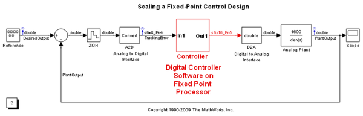

Fixed-Point Tool
Upon opening, this model launches the Fixed-Point Tool. The tool is a graphical user interface (GUI) that automates common tasks of collecting min-max range data during simulations for use in automatically selecting fixed-point scaling for blocks. You can configure any fixed-point capable block in Simulink® to accept the scaling proposed by the tool. You can manually specify scaling for key blocks such as input ports and selectively disable automated scaling in a model on a block-by-block basis. This gives the Fixed-Point Tool more information to work with and results in automatically selected fixed-point scalings that are compatible with the key manually selected scalings.
